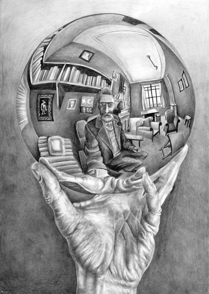

Ventajas y desventajas de la tecnología en el estudio
Ventajas
Una de las principales ventajas de las que disfrutamos los estudiantes de ahora es que podemos usar recursos tecnológicos para mejorar nuestro estudio y facilitar el aprendizaje. Una de las formas más claras en las que la tecnología ayuda a los estudiantes es mediante el uso del internet. Antes para obtener información sobre un algún tema había que investigar en enciclopedias o libros. Ahora casi toda la información sobre cualquier tema se encuentra al alcance de cualquier persona que sepa usar un buscador.
También ha mejorado mucho el canal de comunicación entre los estudiantes y los alumnos. Ahora existen plataformas que permiten a los profesores subir contenidos sobre las materias para que los estudiantes puedan acceder a ellos desde la casa. La posibilidad de tener libros virtuales también reduce de a poco el gasto excesivo de papel.
Plataformas como Google Drive te permiten realizar colaboraciones de los trabajos grupales en vivo. Ya no es necesario reunirse con los demás miembros del grupo para realizar un trabajo ya que existe la posibilidad de hacerlo por internet, lo que permite ahorra tiempo. Además existen programas que pueden ayudar a representar datos de manera muy gráfica y sencilla haciendo temas que parecían complicados mucho más fáciles.
Desventajas
Ahora evidentemente no todo siempre es bueno y existe un lado negativo a que la tecnología esté tan integrada en nuestras vidas. Y es el simple hecho de que si una persona no está concentrada en su estudio, la herramienta que es el internet se puede convertir en una distracción. El tener acceso a toda la información del mundo también te da acceso a mucho entretenimiento y distracciones por lo que es importante darle buen uso a este.
|

|
“MANO CON ESFERA REFLECTANTE” (1935)
El autoretrato de Escher sobre una esfera reflectante siempre me pareció precioso a la vez un intrigante. En esta obra vuelve a combinar el mundo imaginado del dibujo con el mundo real. Se dibuja a sí mismo sosteniendo una esfera, pero ese dibujo tridimensional que incluye su mano y la esfera-espejo es únicamente tinta sobre un papel plano en realidad. Al menos eso es lo que vemos nosotros. Aunque la esfera parece reflejar a Escher y a la habitación que le rodea con todo lujo de detalles, en realidad no muestra a Escher dibujando, porque su mano izquierda está apartada. Tal vez Escher está sugiriendo sutilmente que la realidad no es tal y como parece percibirse, y que el mundo que nos rodea está a veces entre lo imaginado y lo real. Esto que puede sonar un poco a Matrix pudo ser precisamente homenajeado en la famosa escena de la «pastilla roja, pastilla azul»: mientras uno de los reflejos de las gafas de Morfeo muestra a Neo levantando la mano, en el otro tiene la mano apartada. Como Escher en su autoretrato.
Menu
Planteamiento problema
Antiguas tecnologías
Opinión